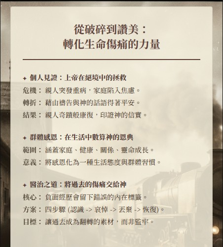
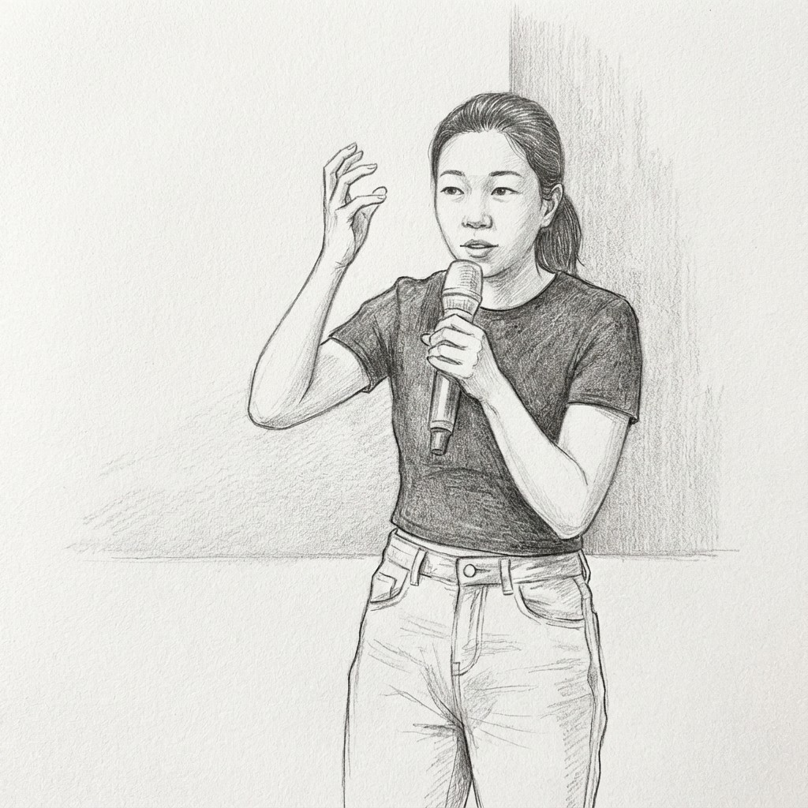
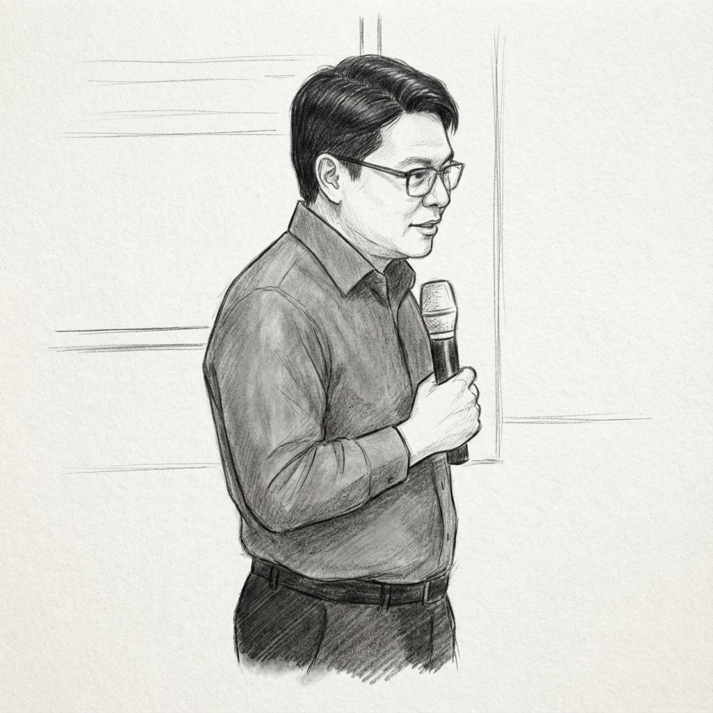
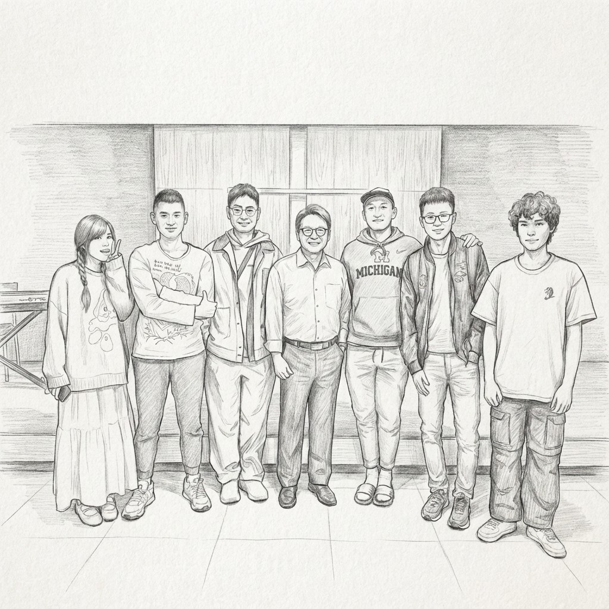

前言：一場聚會，三種聲音，一個核心信息
身為一位長期在信仰禾場中服事的牧者，我時常有機會聆聽並剖析許多動人的生命故事。然而，在最近一次的聚會分享中，我所經歷的卻是一次格外深刻的靈性交響樂。這場聚會由三個看似獨立的樂章組成：一位姊妹在家庭風暴中的個人見證、一群會眾在日常點滴中的群體感恩，以及一篇關於如何回望過去、走向醫治的牧者講道。
當我靜心回顧這三種截然不同的聲音時，我發現它們並非各自獨立的片段，而是在共同譜寫一首宏大的生命詩歌。我的目標，便是從這三個部分中，發掘並闡明它們共同指向的核心屬靈真理。
因此，這份報告不僅僅是對那場聚會內容的重述。我希望透過結構化的分析與反思，帶領讀者進行一次深度的靈性探索，幫助我們每一個人理解，如何將生命中那些歡欣的、焦慮的、甚至是破碎的經歷，都轉化為與神更親近的契機。我邀請您在閱讀時，也一同反思您生命中的「見證時刻」、「感恩清單」與「待醫治的傷痕」，看看上帝如何在您的故事中譜寫同樣的樂章。
本次分享核心主題與總結
在深入探討每個環節的細節之前，讓我們先建立一個清晰的框架。本節將直接點明貫穿所有分享的中心思想，因為理解這個核心主題，對於我們將信仰應用於每日的實踐至關重要。
核心主題：真正的感恩並非僅限於順境，而是在承認並面對生命中的破碎與傷痛後，親身經歷上帝如何將這些負面經歷轉化為醫治、祝福與更深刻見證的過程。
這場分享為我們揭示了三個將此主題活出來的關鍵要訣：
- 要訣一：真實的見證始於危機。 佩茹姊妹的故事深刻地展示了，在家庭面臨突發重病、人心最焦慮的時刻，緊緊抓住神的話語，如何能帶來超越環境的平安。最終，親人奇蹟般的康復不僅是禱告的應允，更是上帝信實同在的鐵證。
- 要訣二：感恩是日常的操練。 會眾們此起彼落的分享提醒我們，上帝的恩典並非只在戲劇性的神蹟中彰顯，而是遍佈在家庭和睦、身體健康、人際關係與靈命成長的各個層面。感恩是一種需要我們時常停下腳步、刻意數算的屬靈操練。
- 要訣三：醫治來自於勇敢回望。 牧師的教導為這一切提供了神學的基石。他指出，逃避過去無法帶來痊癒。唯有勇敢地邀請神介入我們最深的傷痛記憶，承認我們的軟弱，才能將那些曾經定義我們的負面標籤，轉化為見證上帝翻轉大能的力量。
接下來，我們將以更結構化的方式，逐一剖析這三個層次的屬靈功課。
論點綱要卡片

一：風暴中的錨 – 佩茹姊妹的見證

個人見證，是信仰最生動、最鮮活的體現。它將抽象的教義，轉化為一個個可以觸摸、可以共情的真實故事。佩茹姊妹的分享，正是理解「上帝如何在困境中作工」這一主題的完美起點，它為我們展示了在最劇烈的風暴中，信靠如何成為穩固生命的錨。
風暴的來臨與人性的焦慮
故事始於一通令人措手不及的電話——阿姨「出了事」。那一刻，不確定性如烏雲般籠罩了整個家庭。分享中提到「家裡非常的焦慮」，因為「不太確定他的這裝備有什麼樣的變化」。這種面對未知危機時的無助與慌亂，是我們每個人都可能經歷的真實人性反應。在這種狀態下，人們本能地會去搜集資訊、尋求各方意見，試圖抓住一絲掌控感，但內心的焦慮卻往往有增無減。
話語中的平安與信心的傳遞
佩茹姊妹的轉折點，在於她選擇從焦灼地尋求資訊，轉向上帝。她做的第一件事就是「禱告」。更重要的是，在不知如何禱告時，她轉向了聖經。上帝的話語成為了她平安的直接來源，例如：
- 「耶和華靠近傷心的人，拯救靈性痛悔的人」
- 「神會拯救，神的拯救永遠長存」
這些經文如同一道光，讓她的心從焦慮的漩渦中被拉拔出來，轉為平靜安穩。她深刻體會到，這份平安，用她親切的說法，「其實就是小話」——也就是上帝的話語，是超越醫生診斷和人類分析的真實力量。因此，她產生了一個強烈的決心：「必須要把這傳遞給我家」，因為她相信，這份從神而來的平安，是家人在風暴中最需要的。
眼見為憑的醫治與恢復
信心的行動帶來了眼見為憑的果效。她具體地描述了阿姨的康復過程，那是一幅緩慢卻充滿驚喜的畫面：從「右手不能動到右手右可以慢舉起來」，進而到可以下床，最終「可以自己就跟（走）」。
這個親眼目睹的過程，對見證者本人產生了巨大的衝擊。她感嘆道：「每次禮拜我覺得好驚喜」、「哇就上這事情在我身上」。這份驚喜與感嘆，印證了上帝的拯救是何等真實、何等個人化。上帝的作為，從聖經上的應許，變成了她生命中可以述說的故事。
這個見證完美地例證了，即使在最黑暗的風暴中，信靠神的話語也能為我們的心靈找到穩固的錨。它讓我們看見，神蹟不僅是困難的解決，更是信心的塑造。而當個人的信心經歷被群體分享時，它又會激發出怎樣的共鳴呢？接下來，我們將看到這種信靠如何在更廣泛的社群中，以感恩的形式展現出來。
二：感恩的合奏 – 會眾的分享
在聆聽完佩茹姊妹那充滿戲劇張力的獨奏後，教會的分享環節轉入了由會眾共同譜寫的「感恩合奏」。這個環節至關重要，它將我們的目光從單一的危機事件，擴展到上帝在日常生活中無所不在的恩典。如果說個人見證展現了上帝在風暴中的拯救大能，那麼群體感恩則描繪了祂在和風細雨中持續不斷的看顧。它證明了，上帝不僅在危機中動工，也細膩地看顧著我們生活的每一個角落。
以下是從會眾分享中整理出的幾個主要感恩面向：
家庭關係的和睦與更新
- 感謝主賜予「美滿好的家庭跟家人」。
- 感謝神的愛使「跟先生的關係或者孩子跟關係...越來越好」。
- 感謝「先生人則呢，今年越來越喜樂」。
身體的健康與平安
- 感謝主賜給「全家人的平安跟健康」。
- 有人感謝能陪伴79歲和81歲的父母完成一場「小馬拉松」，這不僅是體力的見證，更是親情的寶貴時光。
- 一位母親雖然行動不便，但心態非常健康開朗，這份內在的剛強成為家人極大的感恩。
生活的供應與成就
- 感謝主賜予「所求所需以及我的收入」，體現了在經濟上的信靠與滿足。
- 感謝「兒子在完第一同時，他的研究所也...爭取」成功，看見下一代的努力蒙神祝福。
屬靈生命的成長與同行
- 感謝有一群「同路人」會彼此代禱，這份屬靈夥伴的情誼是行走天路時寶貴的支持。
- 為下週將有「兩位親愛的人要受洗」而感恩，這是福音擴展最直接的果實。
- 最深刻的感恩之一，是公公因身體狀況不佳的經歷，反而成為了契機，「可以聽證的意義，而且接受」，體現了神能使萬事互相效力。
這些看似平凡的感恩分享，其共同點在於對生活中各樣恩典的敏銳覺察。它們提醒我們，感恩不僅僅是對神蹟的回應，更是一種可以操練的生活態度。然而，一個深刻的問題也隨之浮現：當生活並不順遂，甚至充滿了痛苦的回憶時，我們又該如何感恩呢？這個問題，巧妙地將我們引向了牧師講道的深層智慧。
三：醫治的藍圖 – 牧師的講道

為感恩提供了深刻的基礎。它沒有迴避生命的陰暗面，反而直面「人生中最深刻的記憶往往是傷痛」這一殘酷事實。講道的核心，是為我們提供了一條清晰的路徑，一條從勇敢回望過去、走向真實醫治，並最終達到更深層次感恩的路徑。
核心困境：負面經歷留下的內在標籤
真正塑造我們的，往往不是成功的喜悅，而是那些「讓你痛的固的業被解決」的時刻。這些負面的經歷，尤其是在我們成長過程中遭遇的羞辱、比較或拒絕，會在我們的內心深處刻下錯誤的標籤。
他以自身的求學經歷為例，生動地描繪了這些傷痕如何形成：小學時，不識字的母親拿著成績單去問隔壁阿姨，成績單拿出來都是丙等，母親聽了雖說「還不錯」，但他聽在耳裡，「那種被比下去的感覺，到現在還很深刻。」升上國中後，一位老師更是當著全班的面羞辱他：「看到你我就很…『礙眼』」，並指責他拉低了全班的平均成績。這些經歷，會悄然植入如「我不夠好」、「我不值得被愛」、「我註定失敗」等謊言。這些內在標籤會持續影響我們成年後的自我認知，甚至破壞我們的人際關係模式。值得感恩的是，多年後他在一個群組裡與當年的老師們和解，老師們也為當年的言行道了歉，這正是一個醫治與恢復的完整見證。
走向醫治的四個步驟
面對這個困境，牧師提供了一套清晰、可操作的醫治藍圖，包含四個關鍵步驟：
- 認識 (Acknowledge)：看見神的恩手
- 意涵：這一步並非要我們沉溺於過去的痛苦，而是要我們先誠實地辨認「要走出過去先知道停在哪裡」。承認我們的傷痛所在，是醫治的起點。
- 我們需要神的光照，不是為了定罪，而是「讓你看見他的恩手其實在（那裡）啟動」。即使在最不堪的經歷中，神也同在。
- 哀悼 (Mourn)：承認傷痛並交給神
- 意涵：引用馬太福音金句「哀慟的人有福了，因為他們必得安慰」，牧師強調「你不能醫治你不願意面對的東西」。壓抑情緒、假裝堅強無法帶來醫治。真實的哭泣、承認自己的軟弱，是向神敞開、邀請祂介入的開始。
- 哀悼不是軟弱的表現，而是醫治過程中的必要階段。耶穌也曾哭泣，這表明神接納我們最真實的情感。
- 丟棄 (Discard)：換上天國的身份
- 意涵：我們要主動丟棄那些由過去經歷所造成的錯誤自我認知。這些內在標籤，如「我不夠好」或「我總是被放棄」，必須被神的話語所取代。
- 我們的真實身份並非由世界的標準或他人的評價來定義。在基督裡，神看我們是「被檢選的」、「蒙愛的」、「新造的人」。我們需要不斷更新心思意念，活出這個在基督裡的新身份。
- 恢復 (Restore)：看見神的補完與更新
- 意涵：神的醫治不僅是讓傷口癒合、不再疼痛。祂的目標是「恢復」，祂會用「更豐盛的加倍祝福」來補還我們曾經失去的。
- 正如羅馬書所言，「萬事都互相效力，叫愛神的人得益處」。牧師以約瑟為例，神不只是撫平約瑟的傷痛，更是給了他加倍的祝福，讓他成為治理埃及的宰相。同樣，神也要如此恢復我們。過去的傷痛，將不再是羞恥的標記，而是神恩典與大能的見證。
牧師的教導為我們提供了一套具體的屬靈工具。它讓我們明白，我們不必再被過去所捆綁。相反，我們可以邀請神一同走進那些塵封的記憶，將它們從定義我們的監牢，轉化為見證上帝榮耀的素材。
綜合論述：串聯三段分享的黃金線
這三段分享，共同構成了一個從具體到抽象、從實踐到理論的完整信仰圖景，揭示它們之間層層遞進、互為印證的內在邏輯，從而看見一個完整且連貫的核心信息。
- 從「點」到「面」再到「體」的結構遞進：
- 佩茹姊妹的見證是一個深刻的 「點」（個案）。它像一顆投入水中的石子，激起信心的漣漪，具體展示了上帝在極端情況下的拯救作為。
- 會眾的感恩分享則將這個點擴展為一個 「面」（群體）。它如同一幅由眾多小故事拼成的馬賽克，呈現了上帝在日常生活中的普遍恩典，證明神的看顧是持續且多樣的。
- 而牧師的講道則為這一切提供了完整的 「體」（神學框架）。它深入到底層，解釋了這一切背後的屬靈法則，特別是給予我們一套方法論，去處理那些阻礙我們看見恩典、發出感恩的負面經歷與內在傷痛。
- 一個核心問題的完整解答： 我們可以將這三段分享視為對「如何在一個充滿挑戰與苦難的世界裡，活出真實而持續的感恩生命？」這一核心問題的完整回答。
- 見證 提供了一個活生生的榜樣，告訴我們：這是可能的，即便在風暴中。
- 感恩分享 展示了一種可行的生活方式，告訴我們：這是可以操練的，即便在平凡中。
- 講道 則給出了一套深刻的指導原則，告訴我們：這是有路可循的，即便在破碎中。
最終，這場分享的黃金線索清晰地浮現：真正的信仰生命，不是一條筆直的康莊大道，而是一個螺旋上升的過程。它始於經歷神的恩典（見證），發展為在生活中不斷發現恩典的習慣（感恩），並在遭遇痛苦時，懂得如何藉著神的真理將其轉化為更深的祝福（醫治）。無論我們身處何種境遇——是正在經歷神蹟，是享受平凡的幸福，還是正被過往的傷痛所困擾——上帝都邀請我們將目光轉向祂。因為在祂裡面，最深的傷痛可以開出最美的感恩之花，而每一個破碎的故事，都能被祂譜寫成一首讚美的詩歌。
逐字稿重點摘要列表
| 綜合論述 |
|---|
| 【見證】 如果真的會讓我心裡從焦慮快慢慢的平靜，其實就是（神的）話。 |
| 【見證】 所以上帝的拯救如此真實...哇，這事情（就發生）在我身上。 |
| 【感恩】 我感謝主就是賜給我全家人的平安跟健康...感謝主讓身邊的親友就是感受到神的存在。 |
| 【講道】 你人生中最深刻的記憶是什麼...是那些讓你痛的、固著的結被解開。 |
| 【講道】 感恩不是遮掩傷口，而是讓神切開傷口，然後開始醫治...在破碎中看見盼望，在失望中看見神大能的信實。 |
| 【講道】 你不能醫治你不願意面對的東西...你願意敞開的時候，你才有醫治的可能。 |
| 【講道】 在基督裡，過去不能定義你...在基督裡，人的話不能掌控你。 |
| 【講道】 你的過去不是什麼垃圾，而是翻轉的素材...那些不好的經歷，往後更是見證的榮耀。 |
結語與代禱
親愛的朋友，今天我們一起走過了一段從破碎到讚美的旅程。我們看見，無論是在個人的風暴、群體的日常，還是在內心最深的傷痛裡，上帝都在工作。祂渴望將我們的每一次經歷，都編織進祂那充滿恩典的計畫中。
請記得，你的故事還沒有寫完。或許你現在正處於風暴之中，或許你正被過去的陰影所捆綁，但請相信，上帝的結局永遠是恩典。祂應許要靠近傷心的人，祂有能力將你的哀哭變為跳舞。
讓我們將今天所領受的信息，不僅僅停留在頭腦的認知，更能化為生命的行動。願我們都能看見，生命中每一個恩典的「點」，都能匯聚成群體感恩的「面」，並在神真理的「體」系中，找到永恆的意義與力量。
我們一起來禱告：
親愛的天父，我們感謝祢，因為祢是那位又真又活的上帝。我們為那些正被過去傷痛捆綁的心靈禱告，求祢賜下從祢而來的勇氣，讓他們敢於面對，並將這一切交託在祢醫治的手中。
主啊，感謝祢的應許，祢要醫治傷心的人，纏裹他們的傷處。我們相信，在祢裡面，沒有任何破碎是不能被恢復的，沒有任何傷痛是不能成為祝福的。
求聖靈幫助我們，在每一天的生活中操練感恩的眼睛，能看見祢無所不在的恩典。願我們的生命故事，都能被祢親手譜寫，成為一首讚美祢奇妙恩典的詩歌。
奉耶穌基督的名禱告，阿門。
